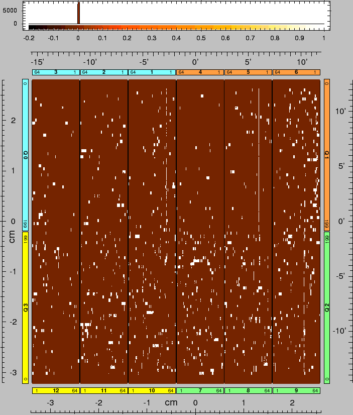

XMM-Newton Science Analysis System
epreject (epreject-5.17) [xmmsas_20170112_1337-16.0.0]
The usual mode of operating the EPIC-pn camera consists of computing an offset
map immediately before the beginning of an exposure. Ideally, this map
contains the energy offset for each pixel (expressed in analog-to-digital
units, adu). During the exposure, these offsets are subtracted onboard from
the measured signals, and only events where the difference exceeds a lower
threshold (usually 20 adu, which formally corresponds to 100 eV) are
transmitted to Earth.
High-energy particles hitting the EPIC-pn CCD during the offset map
calculation may cause the affected pixels to get offset values which
are incorrect by a few adu. As a consequence, the energies of all
events in these pixels appear to be shifted by the same amount. Due to the
specific method of deriving the offset map onboard, the affected areas occur
often in blocks of four consecutive pixels along readout direction. Depending
on the orientation of the trail caused by the high-energy particle with
respect to the CCD, these areas may also extend over several consecutive
pixels perpendicularly to the readout direction. The affected pixels usually
get an offset which is too small. If the affected area extends over several
pixels along a CCD row (perpendicularly to the readout direction), then the
remaining pixels within this CCD row may get an offset which is too high.
If the offset to be subtracted is too small, then the adu values which are
assigned onboard to events in such pixels become too high. Thus, events which
have adu values below the lower threshold and which would normally be
rejected, may show up in the data set. As most of such events are due to
detector noise, which is steeply increasing towards lower energies
(Fig.1), any reduction of the lower energy threshold leads
to a considerable increase in the number of events. An immediately apparent
consequence of this effect is the occurrence of bright patches in EPIC-pn
images which are accumulated at low energies
(e.g.Fig.3). A less obvious consequence is a shift in
the energy scale over the whole spectral bandwidth. This shift degrades the
energy resolution for extended objects. For point sources, the X-ray spectrum
may be shifted by some 10 eV, in most cases towards higher energies, if the
position of the source happens to coincide with one of these patches.
Task epreject
provides two methods to correct the energy scale:
- If offset maps are available these can be used directly to estimate
the offset errors: Since the effected chip areas are limited to
regions where the chip was hit by high-energy particles during
the offset map calculation, the offset error can be determined
by subtracting the value of the offset map in the effected areas
from the value in the unaffected areas. This is achieved by
in turn subtracting its median value from each column and each
row of the offset maps. The values in the remaining residual
offset map can then be regarded as the offset errors which need
to be subtracted from each event falling into the respective pixels.
- If no offset maps are available the offset errors can be corrected
using a method based on the count images accumulated in the lowest
energy channel.
As the detector noise is monotonically increasing towards lower energies, a
correlation is expected between the brightness of such pixels at low energies
and the amount of offset shift which they have received. Evidence for such a
correlation was indeed found, in particular when only the lowest transmitted
adu value (usually 20) is used for determining the pixel brightness. However,
this correlation is disturbed by the fact that the brightness of a pixel at
20 adu is also influenced by other factors, in particular by its individual
noise properties. In order to separate offset-induced changes of the 20 adu
pixel brightness from other brightness variations at 20 adu across the
detector, a reference image is subtracted from the 20 adu image. This
reference image contains for each pixel the nominal, i.e. temporally constant,
value of its 20 adu brightness (Fig.2). The reference image
was derived by accumulating images at 20 adu from long FF exposures with no
bright X-ray sources in the field, and computing the median value for each
pixel.
The intensity in the subtracted, normalized 20 adu images is then used to
reconstruct the value of the offset shift, which was incorrectly applied
onboard, and the raw amplitudes of all events in the corresponding pixels are
shifted back by this amount to their nominal value (Fig.4).
The reconstruction of the offset shift is done by using calibration data which
were derived from exposures where offset maps were available.
X-ray loading:
For the fast modes (TIMING and BURST) X-ray loading may affect the offset map
calculation and thus shift the energy scale across the PSF.
This effect is absent if the offset map is calculated in CLOSED filter
position.
If withxrlcorrection=Y
the tasks checks for the fast modes the FILTER position during
offset map calculation (keyword OTFILTER) and if not CLOSED
it re-shifts the energies
by comparison of the actual offset map with a master offset map.
Note, that this requires that offset maps are available in the ODF
(is generally the case except for early observations) and that the use of
offset maps is enabled (is the default, i.e., withoffsetmap=Y).
The underlying caorrection algorithm in the case of non-CLOSED filter during
offset map calculation is as follows:
- get the CLOSED filter master offset map for mode (TI or BU) and time period
from the calibration area and compute the median of each column.
- determine the general level (for ``master'')
via averaging the median values over
columns 2-10, and subtract this value from the medians
- get the offset map for this exposure from the ODF
and compute the median of each column
- determine the general level (for ``exposure'')
via averaging the median values over
columns 2-10, and subtract this value from the medians
- determine the difference of medians per column ``exposure'' - ``master''
and add this value (modified by a linear function)
to the corresponding PHA values of the events.
Remarks:
Although this task re-adjusts the energy scale, there are some effects left
which cannot be corrected for:
-
If the energy scale has to be corrected towards lower energies, then events may
get raw amplitudes which are below the low energy threshold applied onboard.
In order to re-establish a common lower energy threshold, such events should
be removed in a subsequent step.
-
If the energy scale has to be corrected towards higher energies, then events
with very low raw amplitudes are missing (because they were not included
in the telemetry). In order to re-establish a common lower energy threshold,
this threshold could be increased by the maximum shift which was applied
towards higher energies. However, while a shift towards higher energies is
usually required only for very few pixels, information about the lowest
energies would then be lost for all pixels. Furthermore, the area around the
object of interest might not be affected at all. Therefore, it should be
checked in each specific case whether a general increase of the lower
threshold is appropriate.
Caveats:
In option (2), above, the
task attempts to reconstruct the offset shifts from the brightness of
pixels at 20 adu. While it is guaranteed that the offset shifts can only occur
at discrete adu steps, the correspondence between the 20 adu brightness and
the value of the offset shift is not always unique. The presence of Poissonian
noise in the 20 adu images, in particular for short exposures, limits the
sensitivity for spotting the bright patches and deriving the appropriate
energy correction. The parameter sigma which specifies the minimum significance
which a block of four consecutive pixels along readout direction must have in
order to trigger the offset shift correction task for this block, can be set by
the user. Tests indicate that setting this parameter to is a
good choice for short (
 ) exposures; for longer exposures this
parameter can be increased (to - for more than 20 ks).
It is recommended to control the results by accumulating an image below 20 adu
after this task: this image shows the pixels where an offset shift was applied
(Fig.5).
) exposures; for longer exposures this
parameter can be increased (to - for more than 20 ks).
It is recommended to control the results by accumulating an image below 20 adu
after this task: this image shows the pixels where an offset shift was applied
(Fig.5).
Figure:
Number of events as a function of PHA [adu] for
quadrant 0, obtained during 50.7 ks in a closed FF exposure (0059_0122320701_PNS003). The peak at 20 adu corresponds to an event rate of
0.75 events/frame/quadrant, or
 .
.
 |
Figure 2:
Reference image for the 20 adu intensities per pixel, normalized to
an exposure of 1 ks. It was obtained by accumulating images at 20 adu from
long FF exposures with no bright X-ray sources in the field, and computing the
median value for each pixel. This image contains for each pixel the temporally
constant value of its 20 adu brightness.
|
Figure 3:
Events with raw amplitudes of 20 adu in the closed 23.2 ks FF exposure
0462_0134521601_PNS005. The number of events per pixel is color coded
according to the color bar at top, ranging from zero (black) to 50 (white).
|
Figure 4:
Same as Fig.3, but after applying the
task epreject
for correcting the energy scale in specific pixels.
|
Figure:
Pixels in the exposure 0462_0134521601_PNS005 where offset
shifts were applied. This image was accumulated from events with
, after running the task epreject. A
threshold was applied for the identification of bright patches.
|  |
Figure 6:
Events with raw amplitudes of 20 adu in the closed 23.2 ks FF exposure
0462_0134521601_PNS005, after correcting the offset shifts and after
suppressing the noise. Note that the intensity scale extends now from 0 to 3,
while it covered the range from 0 to 50 in Figs.3 and
4.
|
XMM-Newton SOC/SSC -- 2017-01-12